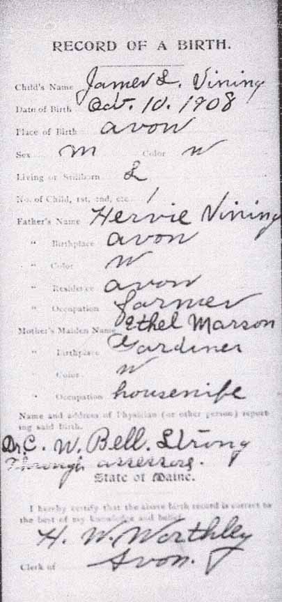
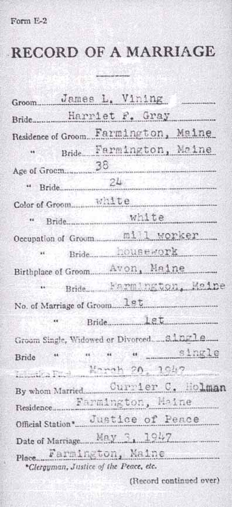
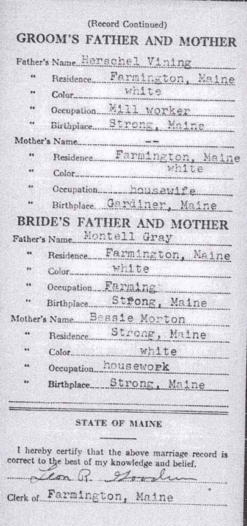
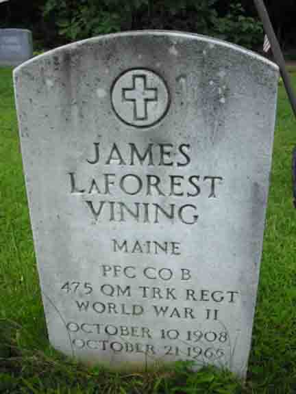
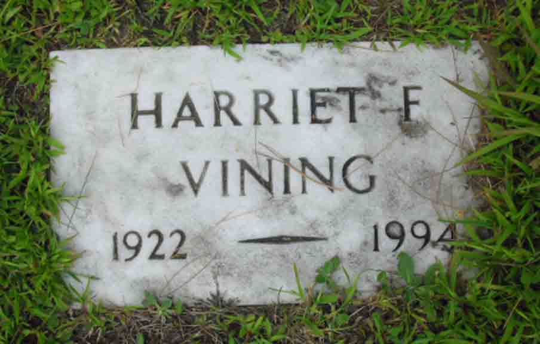

Birth Data
Birth record of James LaForest Vining:
Marriage Data
Marriage record of James LaForest Vining and Harriet Fern Gray:

Death Data
Gravestones for James LaForest Vining and Harriet Fern (Gray) Vining, in Village Cemetery, Strong, Franklin County, Maine (from Find A Grave):
